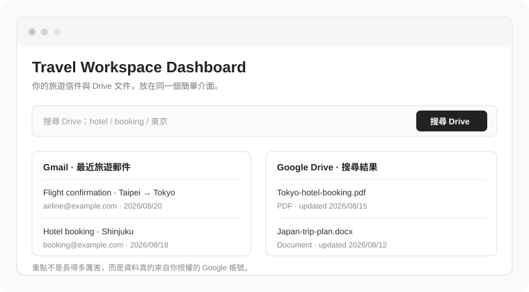

不用全部做到滿分。目標只是證明你已經能把「AI 幫我生網頁」往前推一步，變成一個自己看得懂、敢修改、知道怎麼部署的專案。

這是我的旅遊網站專案。
我想把它當成第一個正式小專案來整理。
先不要修改程式，請先檢查：
1. Repo 結構是否清楚
2. README / 專案規則是否缺少
3. 我目前的部署方式
4. 如果我要先整合 Google Drive，需要改哪些地方
5. 哪些資料或 Secret 絕對不能放進前端或 GitHub
請只給我一個適合新手、可以在今天完成的最小計畫。
不要一次加入太多技術。